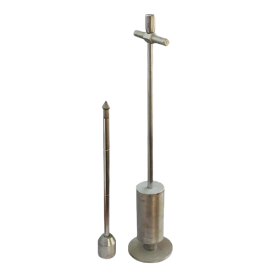
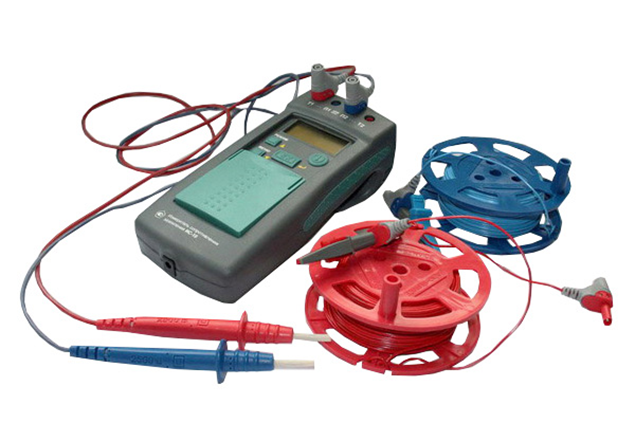
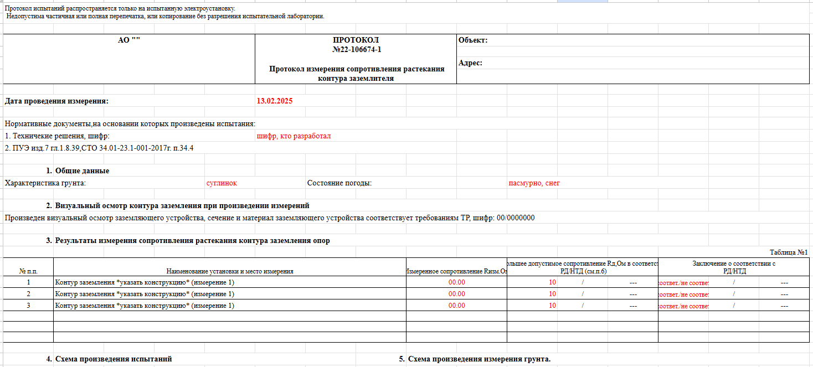

Неразрушающий контроль
Андрей, уже половина курса позади, вы – молодец! Впереди вас ждут более сложные, но не менее ответственные виды строительного контроля. На этом уроке разберем виды и методы разрушающего и неразрушающего контроля: научимся пользоваться главными инструментами инженера СК, составлять протоколы и определять значения результатов измерений.

При строительстве возникает потребность в проведении контроля за качеством выполненных работ и качеством возводимых конструкций. Для этих целей проводится разрушающий и неразрушающий контроль.
Испытания разрушающим и неразрушающим методом проводит специализированная лаборатория. Она должна быть аккредитована и представить следующий комплект документов:
- Положение об испытательной лаборатории (центре);
- Паспорт испытательной лаборатории (центра);
- Аттестат аккредитации с областью аккредитации;
- Руководство по качеству испытательной лаборатории (центра);
- Порядок подготовки и проведения испытаний продукции в испытательной лаборатории (центре);
- Документацию на испытательное оборудование и средства измерений;
- Нормативную документацию, регламентирующую требования к испытываемой продукции и методы испытаний;
- Должностные инструкции персонала испытательной лаборатории.
Как проводить контроль разрушающим методом
Разрушающий контроль – это метод, при котором конструкция (материал, отобранная проба) будет подвергнута разрушению.
Основные методы разрушающего контроля
Скачать PDF · штатный экспорт с пустыми персональными полями.

Текст встроенного материала
Основные методы разрушающего контроля
Испытание на выдергивание
Испытание на сжатие и изгиб
Испытания на отрыв
Испытания на ударную вязкость
Испытания методом сверления
Источник и ограничения. Проверка ответов и персонализация зависят от исходного сайта. Локальные файлы сохранены в том виде, в каком были доступны.
Как у любых других методов, разрушающий контроль имеет как преимущества, так и недостатки:

Как проводить контроль неразрушающим методом
Неразрушающий контроль – это метод испытания, который оставляет испытываемую конструкцию целой. Такой метод не требует демонтажа или вывода из эксплуатации.
Виды неразрушающего контроля:
Основные методы неразрушающего контроля
Скачать PDF · штатный экспорт с пустыми персональными полями.
Текст встроенного материала
Основные методы неразрушающего контроля
Визуально-измерительный контроль
Акустический метод
Метод ударного импульса
Магнитный метод
Тепловой метод
Радиографический метод
Источник и ограничения. Проверка ответов и персонализация зависят от исходного сайта. Локальные файлы сохранены в том виде, в каком были доступны.
Неразрушающий контроль, как и разрушающий, также имеет свои преимущества и недостатки:
Некоторые методы контроля инженер СК может провести самостоятельно, это поможет удостовериться в подлинности протоколов, предоставляемых подрядчиком, а также в некоторых случаях разрешать производство работ до момента получения заключения лаборатории.
Как измерить прочность бетона
При наличии готовой монолитной конструкции можно провести измерение прочности бетона. Для этого используем прибор склерометр (молоток Шмидта).

Принцип его действия основан на ударе с известной силой бойка и измерении высоты его отскока в условных единицах шкалы прибора. Затем с помощью специальной таблицы необходимо перевести значение в плотность и узнать класс бетона.
Данные заносятся в протокол. При наборе прочности 70% опалубку можно снимать, 80% – нагружать.
По результатам исследования заполняется протокол. Приложенная форма автоматизирована, при внесении значений о величинах отскока и указании проектной прочности, формула рассчитает процент прочности самостоятельно.
Посмотрите видеоинструкцию, где я наглядно показала, как работать со склерометром.
В данном случае контроль прочности бетона был произведен по причине того, что подрядчик снял опалубку раньше расчетного срока. По результатам измерений подрядчику был выписан акт-предписание и дальнейшие работы остановлены до необходимого набора прочности конструкции
Итак, по результатам исследования заполняется протокол. Специально для вас я разработала полностью автоматизированную форму протокола, которой вы уже сейчас можете начать пользоваться: при внесении значений о величинах отскока и указании проектной прочности, формула автоматически рассчитает процент прочности.
Давайте потренируемся измерять прочность бетона. Для этого:
- Скачайте форму протокола на рабочий стол
- Определите три значения отскока на представленных ниже фото (Класс бетона В25)

Внесите значения отскока в три ячейки таблицы протокола, выделенные желтым цветом.
Красным выделен текст, который формируется на объект контроля. Ячейки, выделенные зеленым цветом, заполнять не нужно, в них указаны формулы для автоматического расчета!
- Выберите из представленных ниже вариантов процент прочности бетона (значение округлить до целого):
Как измерить плотность грунта
Результат уплотнения можно узнать сразу на объекте с помощью плотномера. Эти измерения производят для определения прочности грунта оснований сооружений, оснований автодорожных покрытий.

По числу ударов и графику, который приложен в паспорте на прибор, определяется коэффициент уплотнения и сравнивается с проектным. На видео ниже я показала, как это выглядит на практике.
📢Обязательно досмотрите видео до конца, чтобы успешно выполнить задание.
Для определения плотности насыпного грунта достаточно разобраться в графике, который представлен в паспорте на оборудование. Для отработки этого навыка решим всего три задачи.
Как измерить сопротивление заземления
При строительстве проводят различные работы, в том числе устройство контура заземления. Заземление делают для обеспечения безопасности – оно обеспечивает безопасный пусть рассеивания тока, – а также защиту от поражения человека током, предупреждения аварийных ситуаций, защиты зданий от молнии и сведения к минимуму электрических шумов и помех в аудио- и видеосистемах.
Заземление состоит из вертикальных стержней, которые задавливают в грунт на расчетную глубину и горизонтального пояса, который соединяет все вертикальные элемента и заземляемое оборудование или конструкцию.
Illustration

Текст встроенного материала
Так выглядит устройство контура заземления небольшой подстанции. Когда подстанцию установят, контур стальной полосой приварят в выпускам контура самой подстанции
А так выглядит устройство контура заземления высоковольтной опоры
И надземная часть (круглый проводник), который впоследствии соединяется с подземной частью
Источник и ограничения. Проверка ответов и персонализация зависят от исходного сайта. Локальные файлы сохранены в том виде, в каком были доступны.
Измерить сопротивление можно с помощью прибора ИС-10. Сопротивление для различных конструкций и элементов рассчитывается при проектировании. Нам остается только измерить само значение построенного контура и сравнить с проектным.

Подробную инструкцию по проверке контура заземления я изложила в видео.
После измерения составляется протокол, как на образце ниже.

Теперь перейдем к практике. На рисунках ниже – фрагменты проектов с допустимым значением сопротивления. Определите пригодность контура по представленным в задании условиям.
Задание